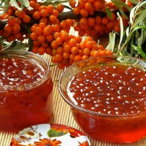

Вопрос долголетия волновал умы людей всех времен, стран и народов. Сб этом свидетельствуют иероглифы Древнего Египта и Китая, древние памятники Индии и Греции. Для поддержания здоровой и долгой жизни необходим правильный режим питания. Мыслители и врачи древности придавали меду огромное значение, считая, что употребление его в пищу способствует продлению человеческой жизни. Нередко люди, регулярно питающиеся медом, доживают до глубокой старости.

Имеет удивительные свойства: в течении многих лет он сохраняет свои качества, не покрывается плесенью. Это свойство меда использовали еще стародавние римляне – они консервировали им редкую дичь, которую доставляли из дальних стран. Залитая медом дичь сохраняла свою свежесть, вкус и вид. Известно и другое. Тело Александра Македонского, который умер вовремя похода, было доставлено в столицу Македонии погруженным в мед. Лишь с открытием антибиотиков, которые были обнаружены и в меде, стали понятны его противомикробные свойства.
Долгое время мед был основным источником сладости для человека, поэтому наложил отпечаток на меню сладкого стола в Европе.Преимущественно мед использовался в кондитерских изделиях (пряниках, коврижках и др.). А также в напитках, на Среднем и Ближнем Востоке для заливки горячих кондитерских изделий (например пахлавы). После появления сахара употребление меда в кулинарных и кондитерских изделияхрезко сократилось. Но сегодня, оценив максимальную полезность меда по его витаминному и минеральному составам, осознав вредность рафинированныхпродуктов, в том числе сахара, люди вновь обратились к натуральному продукту - меду.
Предлагаемые рецепты мучных кондитерских изделий, холодных и горячих медовых напитков, овощных и фруктовых блюд с медом при правильном их подборе и систематическом употреблении восполнят пробел в вашем ежедневном питании и позволят корректировать витаминную и минеральную ценность суточного рациона на протяжении всего года, продлят молодость, активное долголетие.
Напиток из овса
Понадобится:
- Вода - 1,5 л
- овес - 1,5 стакана
- мед - 1 ст. ложка
- лимон - 0,5 шт.
- Выход - 1 л
Овес залить холодной водой и довести до кипения. Настаивать в теплом месте 3-4 ч. В конце настаивания добавить мелко нарезанную или натертую на крупной терке цедру лимо¬на, процедить, добавить мед, лимонный сок. Подавать теплым.
Напиток из инжира и моркови
Понадобится:
- Вода - 0,5 л
- инжир сушеный - 1 стакан
- сок морковный - 1 стакан
- мед - по вкусу
- Выход - 1 л
Инжир хорошо промыть теплой водой, пропустить через мясорубку. Измельченную массу залить кипятком, размешать, довести до кипения. Снять с огня и дать настояться 1-2 ч, процедить, добавить мед и охладить.Затем влить морковный сок
Напиток каротиновый
Понадобится:
- Вода - 1 стакан
- сок морковный - 2 стакана
- лсок апельсиновый - 1 стакан
- лимон - 2 шт
- мед - 1 ст.ложка
- Выход - 1 л
Мед растворить в кипяченой охлажденной воде, смешать с соком моркови, апельсина и лимона. Хорошо охладить. При подаче в стакан положить кусочек лимона.
Напиток из меда и липовых цветков
Понадобится:
- Вода - 10 л
- мед - 800 г
- липовых цветков столько, чтобы настой стал золотистого цвета
- лимонной кислоты по вкусу
Высушенные цветки залить крутым кипятком, настоять полчаса, процедить, добавить мед и лимонную кислоту. Напиток охладить.
Сок лимона с медом
Понадобится:
- Минеральная вода - 500 г (нарзан, боржоми)
- мед - 50 г
- сок 1 лимона
Медовуха
Понадобится:
- Вода - 8-10 л
- мед - 3-3,5 кг
- хмель - 120-150 г
- дрожжи - 4 чайных ложки.
Кипяченую воду остудить до комнатной температуры, добавить мед, хмель и дрожжи. После брожения напиток профильтровать, охладить, через 1,5-2 месяца он готов к употреблению. Хранить в прохладном месте.
Гоголь-моголь
Понадобится:
- Молоко - 2 стакана
- мед - 6 ст. ложек
- яйцо 1шт
- лимонный или апельсиновый сок - 2 ст. ложки
Яйцо, холодное молоко, мед и сок смешать и взбить до получения однородной массы. Подавать к столу в охлажденном виде.
Медово-сливочный напиток с апельсиновым соком
Понадобится:
- Сливки -100 г
- мед - 1 ст. ложка
- яйцо (желток) - 1 шт
- апельсиновый сок - 100 г
Все хорошо перемешать, подавать холодным.
Коктейль медовый
Понадобится:
- Молоко - 100 г
- мед - 35 г
- яйцо (желток) - 1 ш.
- корица - 2 г
- Выход - 150 мл
Перед употреблением коктейль посыпать молотой корицей.
Пунш медовый "Апельсин"
Понадобится:
- На 1 стакан напитка:
- воды -100 г
- сиропа апельсинового - 10 г
- сока апельсинового - 20 г
- цедры лимона - 1 г
- гвоздики - 0,2 г
Цедру и гвоздику заварить кипящей водой, процедить, добавить в напиток мед, сироп, сок и перемешать, затем еще раз процедить и перелить в подготовленную посуду.
Рябиновое варенье с медом
Понадобится:
- Ягоды рябины - 500 г
- сахар -300 г
- сахар -1 стакан
- Выход - 1 кг варенья
Собранные после первых морозов ягоды рябины перебрать, удалить плодоножки, промыть в холодной воде и облить кипятком. Затем положить залить горячим сиропом примерно на 1-1,5 ч, после чего варить до легкого загустения сиропа. Чтобы ягоды хорошо пропитались сладостью, их необходимо выдержать в сиропе в течение 6-7 ч, после чего снова варить до готовности.
Торт «Пчелка»
Понадобится:
- Мука - 3 стакана
- маргарин - 150 г
- сахар-песок - 6 ст. ложек
- дрожжи - 30 г
- Мед -80 г
- миндаль орехи - 200 г
- Мука - 3 стакана
- маргарин - 150 .
- горький миндаль - 5 плодов
Приготовить дрожжевое тесто. В мед добавить маргарин, сахар, прокипятить, положить натертый сладкий и горький миндаль. Когда масса остынет, добавить яйца, молоко, соль. Полученную массу выложить на тесто. Печь 25 мин.
Пасечный торт
Понадобится:
- Мука - 3 стакан
- мед - 400 г
- сахар -1 стакан
- яйца - 5 шт
- сметана - 1 стакан
- гвоздика и корица размельченная (немного)
- сода -1ч. ложка